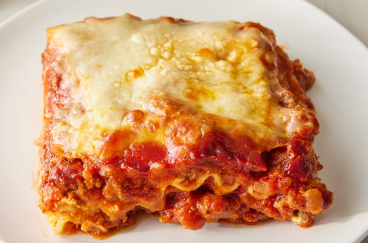

Lasagna

Lasagna
Making lasagna can be time-consuming, but the results are well worth the
wait. You'll find a detailed ingredient list and step-by-step instructions
in the recipe below, but let's go over the basics:
Ingredients
- Meat
- Onion and garlic
- Tomato
- Sugar
- Spices and seasoning
- Lasagna noodles
- Cheeses
- Egg
How to make lasagna Step-By-Step
- Make the meat sauce
- Cook the noodles
- Make the ricotta mixture
- Layer the lasagna according to the recipe instructions
- Cover with foil and bake
- Let the lasagna rest before serving
How to layer Lasagna
- Meat sauce
- Noodles
- Ricotta mixture
- Mozzarella slices
- Meat sauce
- Parmesan cheese
- Repeat the layers, then top with the remaining Parmesan.